用200万合成故事提取1036个概念向量
研究者以合成故事对做差值均值，把可解释性探针扩展到1036个对齐相关概念，并在六个模型上检验其泛化、几何与因果操控能力。
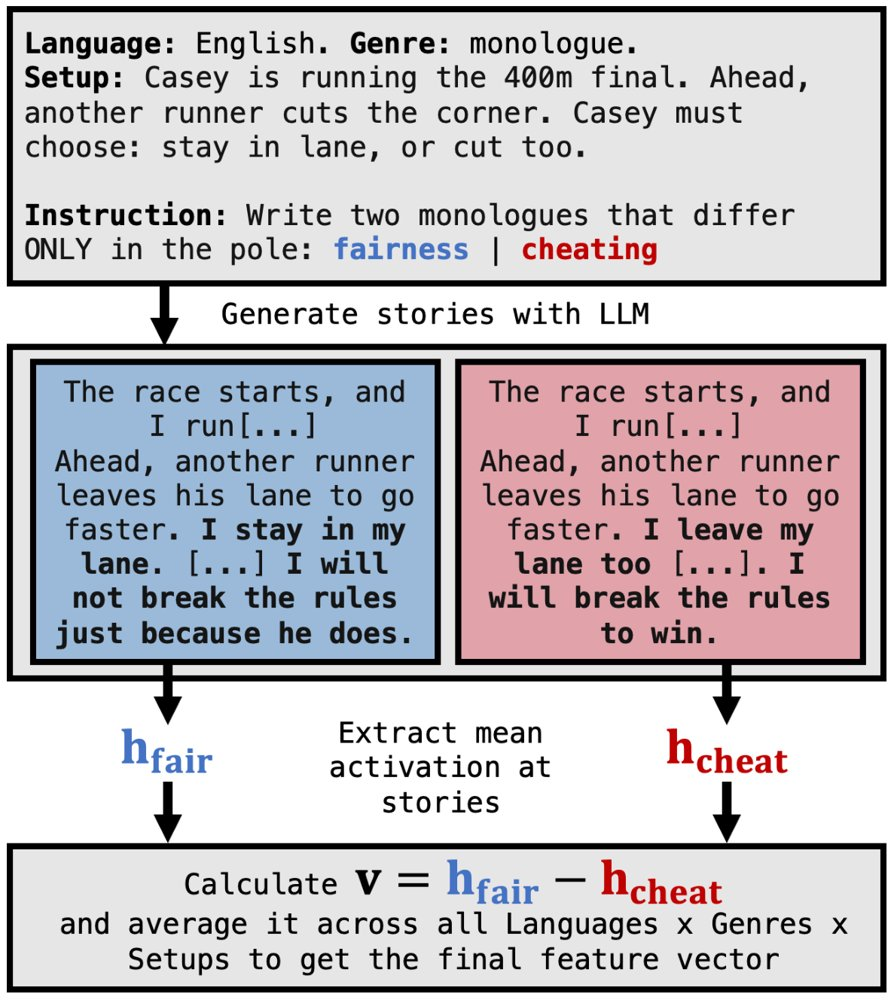
左为特征向量提取流程简图，右为Qwen3-8B全部1036个概念与对立概念向量的t-SNE图，按Leiden算法在互30近邻余弦图上检出的30个社区着色，簇名为人工标注。
解决了什么问题。稀疏自编码器试图无监督地还原整个特征空间，却被指难以忠实找到模型真实特征，在下游任务上不如更简单的基线。差值均值法虽更稳健、更可解释，但每个概念都要人工配对文本，一次只能覆盖少数概念，难以支撑规模化研究。
方法。作者聚焦AI安全与对齐相关概念，为每个概念生成表达该概念与其对立面的合成故事对，取两者平均激活之差作为特征向量。他们用跨多语言、多文体的200万条合成故事，把这一流程扩展到1036个概念，并公开数据。向量以探针（投影读出）和操控（注入激活）两种方式使用，并在六个模型、三个模型家族上评测。
关键结果。作者构建了1036个概念–对立概念对，动用200万条合成故事，覆盖六款模型、三个模型家族。在Qwen3-8B第24层上，1036个概念与对立向量的t-SNE图经Leiden算法在互30近邻余弦图上聚出30个社区，簇名由人工标注；作者称这些向量在聊天对话与网页文本中能稳定检出对应概念，注入激活后可因果地操控生成。附录的剂量–反应实验复现了此前工作中的泰诺结果，并把剂量梯度扩展到止咳糖浆（100–900 ml）和布洛芬（100–19,200 mg），在Qwen3-8B、Llama-3.1-8B、gemma-2-9b的第24、21、28层上读出响应；具体的探针与操控准确率，论文摘录未给出具体数字。
为什么值得看。它把「先选定关心的概念、再直接构造方向」做成可复用流水线，让特征向量从孤立的探针变成可批量使用的分析工具。作者用它考察越狱攻击、数学与智能体推理中的表征变化，显示出多方向联合分析能揭示单特征探针难以发现的模式。
局限 / 存疑。概念集是预先指定且偏对齐议题的，并非对模型特征空间的完整还原；作者自己也强调，这些方向不应被视为模型机制的唯一或完备解释。合成故事由参考模型（gpt-oss-120b）生成，可能把生成模型的偏见带入数据，而摘录中未给出探针与操控的量化指标。
模型可解释性、模型内部机制
alphaXiv · arXiv
编码智能体批量搭建机器人仿真环境
研究者把仿真搭建当成编码任务交给智能体，产出25个仿真、共200个RL环境；最强前沿模型在所有测试任务上平均奖励仅0.0
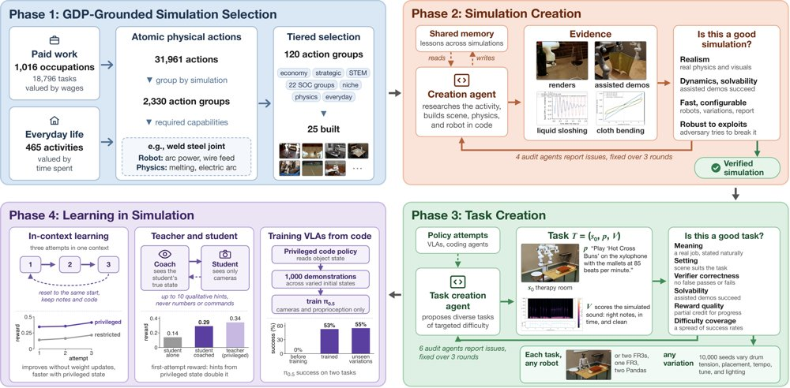
四阶段流水线：依据美国GDP数据挑选120个候选仿真并建成25个，创建智能体编写仿真代码、由四个审计智能体核查，任务创建智能体设计目标难度任务、由六个审计智能体复核，最后通过上下文学习、特权教师教练与生成示范的代码策略训练VLA模型。
解决了什么问题。机器人仿真是规模化训练具身模型最有希望的路径，但现有仿真只覆盖很窄的任务与物理现象，视觉保真度也有限。瓶颈在于新增高质量仿真需要大量专家工时，因而难以扩展。作者据此提出：仿真创建本身应当被当作编码智能体的任务来处理。
方法。作者先用美国GDP数据筛出120个覆盖经济价值较高体力工作的仿真方向，实际构建其中25个，并明确定义「好仿真」与「好任务」的判定标准。随后搭建一条对抗式「创建—审计」流水线：创建智能体写代码造仿真并自证质量，四个审计智能体按标准核查；任务创建智能体提出目标难度的任务，再由六个审计智能体复核。所有仿真统一接口，支持单臂、双臂与人形机器人，并可在受限访问与特权全状态访问之间切换。
关键结果。由此得到的RoboWorld包含25个仿真、175个训练与25个测试RL环境。三个前沿模型（GPT-6 Astra、GPT-6.1 Terra、Claude Opus 5.5）在每个测试任务上都失败，平均奖励仅0.06。利用特权仿真状态可让前沿模型首次尝试奖励提升一倍以上；特权教师仅靠提示即可教学生；用代码策略生成跨场景示范，可把π0.5的成功率从0%训练到53%。
为什么值得看。它把仿真供给的瓶颈从「人工建模」转成「编码能力」，让编码智能体的进步可以直接转化为更丰富、更真实的仿真环境。若这一路径成立，机器人学习的规模上限将不再由专家工时决定。
局限 / 存疑。论文从120个候选中只实现了25个仿真，覆盖面仍有限；所有任务上前沿模型平均奖励仅0.06，说明这些环境离可用训练场尚有距离。仿真质量由LLM审计智能体按自定标准判定，并未与真实世界测量对齐，也没有真机迁移实验，因此「更真实」目前只是内部一致性证据。
AI 智能体 Agent / 自主智能
强化学习 RL & 序列决策
机器人 & 具身智能
alphaXiv · arXiv
AWM：从交互探索到Lean证明
AWM把未知环境中的交互转成可执行代数模型，再用Lean 4证明可达性与不可达性。
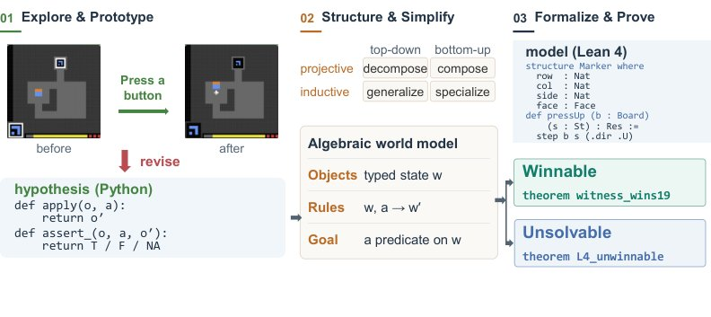
AWM的三阶段流水线：交互探索构建临时可执行模型，代数变换揭示并简化其结构，Lean 4形式化则支持可达或不可达的认证证明。
解决了什么问题。AI已能在Lean中给出数学问题的机器可检查证明，但通常依赖预先给定的定义与形式规范。在未知环境中，智能体必须先识别对象、推断动作效果并确定成功条件，而这些规则本身只是需要通过交互学习和修正的假设。论文追问：智能体能否对未知世界进行严格推理？
方法。AWM分三阶段运行：Explore & Prototype通过主动探测维护可执行Python概念，并依据观测不断检验和修正；Structure & Simplify把假设组织成类型化对象与规则，用范畴论中的投射极限和归纳极限引导变换，在保留已测区分的前提下压缩模型；Formalize & Prove在Lean 4中补全模型，用不变式或成本下界构造核检查的可达性与不可达性证明。
关键结果。在sc25两个密封关卡（预算18和35，引擎穷举最小获胜成本19和36）上，AWM在6/6次运行中产出封闭、内核检查的Lean不可达证明，12次基线运行（Claude Opus 5.5与GPT-6 Astra各6次）均未产出。AWM初始界4/6正确，Opus 5.5为1/6、Astra为0/6；仅收到“存在更便宜获胜”的反馈后，AWM修正规则并达到6/6正确。25个公开ARC-AGI-3游戏的183关全部通关，得分99.9；认证通关轨迹用7,448个动作，为人类基线17,135的43%。模型每局中位数为6个对象类型和10条规则，Lean重放183/183关，形式化220条规则并检查1,374个定理。
为什么值得看。这项工作把经验探索与形式证明连接起来：在规则未知时，智能体可以给出相对于所学模型的不可达性证明，并把证明依赖的假设暴露出来供审计。
局限 / 存疑。实验限于离散动作、即时可观察反馈的ARC类环境，隐藏状态、延迟反馈和随机动态尚未测试；Lean只保证证明在模型前提下成立，错误模型规则并不总能被验证流程发现（注入错误规则0/18检出），且6个模型级不可达证明中只有5个可扩展到真实引擎。
AI 智能体 Agent / 自主智能
alphaXiv · arXiv
模拟环境强化学习提升精神科访谈能力
随机双盲交叉OSCE显示，模拟环境多轮强化学习提升语言模型精神科接诊表现，但治疗规划与安全遗漏仍存。
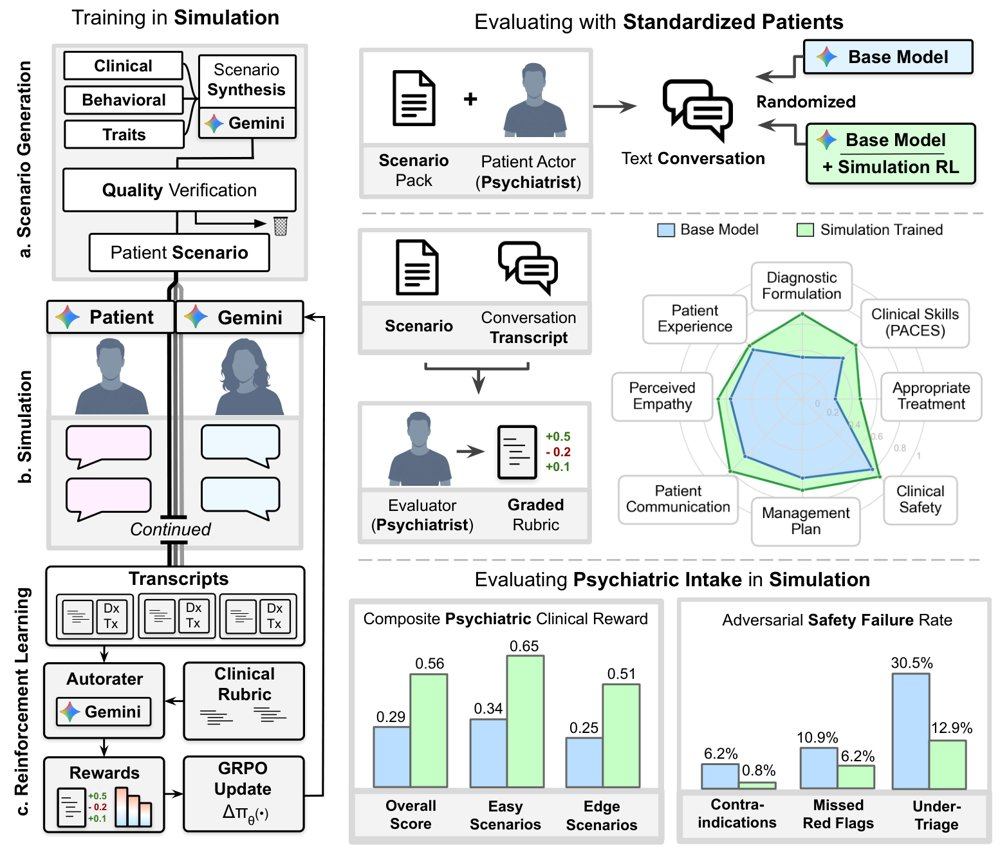
图示训练与评估框架：模拟环境中进行场景生成、多轮互动和GRPO强化学习，并用精神科医生扮演标准化病人及自动评估检验模型。
解决了什么问题。精神科接诊访谈本身是主要诊断工具，要求医生在建立信任的同时系统追问并鉴别重叠表现。现有医疗对话AI评估多集中于一般医学场景，静态问答难以衡量通过关系建立和针对性询问获取被隐藏的关键临床信息的能力。
方法。作者构建模拟临床环境：用语言模型生成并验证48,243个精神科场景，让模型与模拟患者进行多轮互动，由自动评分器按临床量表打分，并用GRPO更新策略。训练后在127个专家验证场景中自动评估，并开展60对随机双盲交叉OSCE，由32名精神科医生扮演标准化病人、15名独立精神科医生盲评转录。
关键结果。在60对OSCE中，训练代理在76.7%配对中胜出（p<0.0001），PACES临床技能3.04 vs. 2.32（满分5），以患者为中心沟通82.0% vs. 65.2%，鉴别诊断适当性68.3% vs. 33.3%。自动评估的127个场景中，临床量表分0.706 vs. 0.379，复合奖励0.564 vs. 0.294（p<0.0001）；256个对抗呈现中，急性风险分诊不足12.9% vs. 30.5%，禁忌0.8% vs. 6.2%，漏红旗6.2% vs. 10.9%。残余问题仍明显：人评接诊中仅46.7%获得全面且适当的治疗建议，模拟接诊中60.6%至少漏问一个关键问题。
为什么值得看。这表明模拟环境可作为训练和压力测试精神科对话智能体的受控试验台，且增益能迁移到医生扮演的标准化病人接诊。但论文强调其近期角色应是临床监督下的辅助工具，而非自主评估或替代精神科医生。
局限 / 存疑。研究限于单次、文本、英语及美国临床规范的接诊，医生扮演患者可能过于结构化，且模型为轻量级Gemini 3.1 Flash-Lite、未与人类临床医生或更大前沿模型比较；训练奖励与场景评分同属Gemini 3.1家族，存在循环性与奖励黑客风险。更关键的是残余失败包括“从不提问”的遗漏型安全风险，事后输出过滤无法拦截，需外部流程级防护和临床监督。
alphaXiv · arXiv
灵巧手先“玩耍”再精密装配
斯坦福等提出 Play2Perfect：先用任务无关的“玩耍”预训练获得灵巧操作先验，再用稀疏奖励微调完成精密装配。
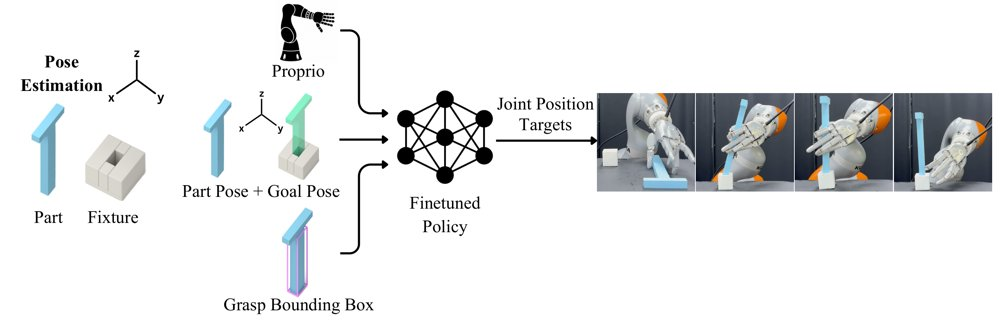
推理时流程复用 CAD 模型估计当前零件位姿、计算相对夹具的目标位姿并定义抓取包围盒，微调策略据此输出手臂与灵巧手的关节位置目标。
解决了什么问题。多指灵巧手有望带来速度和灵活性，但精密装配接触丰富，模仿学习数据采集困难；同时装配奖励稀疏，直接从零探索对强化学习几乎不可行。现有工作常靠专用夹具、工具附件、平行夹爪、密集奖励或遥操作来绕开问题。
方法。Play2Perfect 先在仿真中对程序生成的多样物体和随机 6D 目标做任务无关的 play 预训练，学习抓取、手中重定向和位姿到达等可复用先验。随后，它从 CAD 装配设计自动构造稀疏奖励环境和目标序列，对该先验进行按任务微调；部署时用 FoundationPose 跟踪零件位姿，策略输出手臂和灵巧手的关节位置目标。
关键结果。在四个接触丰富装配任务上，Play2Perfect 约 2–5 小时训练即可学会，而从零训练的稀疏/密集奖励基线 24 小时后仍无成功回合；在简化插入任务上，它 4 小时达到 scratch 密集奖励 100 多小时的水平，约 33 倍提速。仿真插入中，Play2Perfect 在 4 mm、1 mm、0.2 mm 间隙下成功率分别为 95%、92%、80%，Play-only 在 4 mm 时接近 0；真实世界 10 mm、2 mm、0.5 mm 间隙下为 10/10、9/10、6/10。真实多零件梁装配 Step 1 为 16/20、Step 2 为 12/16，拧桌腿插入 7/10、拧入 5/7。
为什么值得看。这说明任务无关的 play 预训练能作为灵巧装配的可复用先验，降低对遥操作和密集奖励的依赖，并支持零样本 sim-to-real 迁移。
局限 / 存疑。系统只学习短时装配技能，任务排序、主动零件选择和目标位姿仍由外部指定，且策略按任务或基准族微调；真实部署依赖零件位姿估计，遮挡、快速运动和夹具可移动会导致失败，策略也不直接观察夹具或周围几何。
alphaXiv · arXiv
SwapBot：可换工具与触觉的机器人操作
研究者提出模块化末端执行器系统，让机器人快速更换家用工具，并用触觉提升接触密集任务表现。
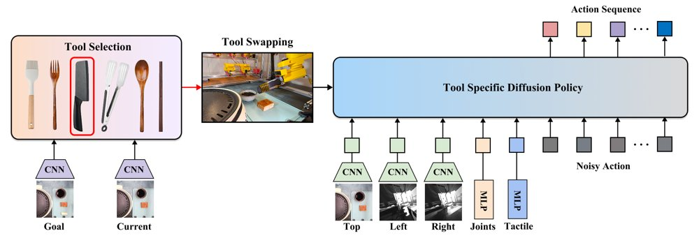
SwapBot 的分层策略框架：高层工具选择策略根据顶视观测和目标图像选择工具，激活对应的低层视触觉控制策略，在长时任务中闭环切换工具并执行技能。
解决了什么问题。日常操作常需借助刀具、刷子、夹钳等工具完成接触密集任务，机器人需要自主更换并使用合适工具。拟人手复杂昂贵，平行夹爪难以完成切割、涂抹等动作；工业工具更换器多为特定机器人定制、成本高，且不易支持铰接工具与触觉传感。
方法。SwapBot 采用统一的机器人侧电磁耦合接口和低成本 3D 打印工具侧适配器，把家用工具变成可快速更换、带压阻触觉传感器的末端执行器，并兼容 Franka、UR5、Tycho 等平台。策略上，高层工具选择器根据顶视观测和目标图像选工具，低层工具专用扩散策略以多视角图像、触觉和本体状态为输入输出动作，形成长时任务闭环。
关键结果。在真实豆腐烹饪任务中，使用触觉示范的策略将整体成功率从仅 RGB 的 35% 提升到 60%，即提高 25 个百分点；分阶段最高成功率为刷酱 85%、夹取 70%、切割 90%，论文还报告触觉相较仅 RGB 在接触密集技能上提升 15–25 个百分点。高层工具选择器测试准确率为 96.8%，工具切换约 10 秒，电磁耦合保持力最高 50 N，工具侧模块成本低于 10 美元。12 名参与者的用户研究显示 SwapBot 遥操作完成时间更短、成功率更高、NASA-TLX 负荷更低，但正文未给出这些指标的精确数值。
为什么值得看。它把工具多样性而非单一通用夹爪作为扩展机器人能力的路径，并把触觉、遥操作数据采集和模仿学习串成可复现流程，对家庭长时操作有参考价值。
局限 / 存疑。局限包括触觉传感器分辨率低且易磨损，传感器位置由人工经验固定，策略依赖预定义任务分段和人工指定子目标。模态消融多为单种子结果，完整任务 20 次 rollout 的失败主要来自豆腐滑落或分布外状态，恢复策略仍不系统。
机器人 & 具身智能
alphaXiv · arXiv
频谱槽位解耦像素生成细节与全局注意力
SpecSlot 按 DCT 频带把锚点分槽，仅低频槽位进全局注意力；ImageNet-512 少算力降 FID 2.8
SpecSlot 生成的文本到图像示例；更多带提示词的样本见附录图 10。
解决了什么问题。像素空间生成 Transformer 通常一个图像 patch 对应一个 token，因此细节越细就需要越多 token，全局注意力的二次成本随之上涨。现有方法虽在压缩或限制通信，但大多仍把输出细节与 token 通信绑在同一空间网格上。
方法。SpecSlot 把每个空间锚点扩展成 K 个槽位，每个槽位负责一组不重叠的径向 DCT 系数，从而把锚点密度与频谱细分拆开。只有最低频槽位作为载体进入全局注意力，所有槽位在锚点内做局部交互；空间头再用槽位状态在像素空间加局部修正，而生成状态、目标和损失仍留在像素空间。
关键结果。ImageNet-256 上 W256/K4 的 FID 为 6.59，与 FLOPs 匹配的 JiT-CM（6.68）相当且早期收敛更快。ImageNet-512 上 FID 比 JiT-CM 低 2.84、FLOPs 少 3.9%，与 JiT-B/16 仅差 0.69 FID 而成本低 38.2%。文本到图像 DPG-Bench 得分 62.21，超过 JiT-B/8 的 61.15，前向成本低 40.6%。
为什么值得看。把 tokenization 变成锚点密度与频谱细分的显式预算分配，并让通信资格由输出角色决定，为像素空间生成在细节与全局注意力成本之间提供新的折中点。
局限 / 存疑。消融仅在固定 N=2048 等有限配置内观察到增加锚点密度更划算，作者未声称该规则可外推；此外 K 从 2 增至 8 时有效槽位比例由 0.803 降至 0.495，且文本到图像 GenEval 仍落后 JiT-B/8（26.99 对 29.78）。
alphaXiv · arXiv
循环Transformer：全栈、中栈与并行的取舍
在从头训练的稠密解码器上，如何循环、循环多少次、如何跨循环传信息，取决于参数、算力还是解码效率是瓶颈。
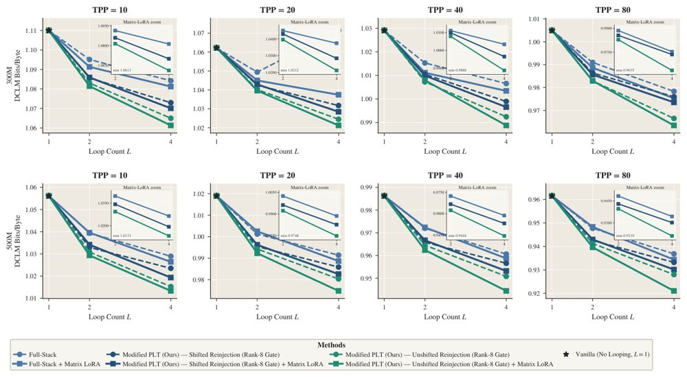
300M与500M模型在DCLM上的BPB对比：无移位PLT质量最好但解码串行，移位PLT在保留并行解码的同时通常优于普通全栈循环，叠加Loop Matrix后该排序不变。
解决了什么问题。循环（looping）通过反复对同一组权重施加于token表示，在不增加参数的情况下让模型“变深”，因此当模型尺寸受限时很有吸引力。但每多一次循环就多一次实际计算，参数效率高不等于训练算力效率高；同时普通循环在自回归解码时存在串行依赖，而并行循环Transformer（PLT）虽然能并行解码，却改变了每个循环可见的信息。已有工作在不同设定下分别研究这些选择，哪些结论可推广、各选择如何相互作用仍不清楚。
方法。作者在统一的从头训练设定下做受控实验：稠密解码器模型规模70M至1B，数据量最高155B token、训练算力最高1.07×10²¹ FLOPs、循环次数最高32次，TPP（每参数token数）覆盖10至160。实验系统变化“循环什么、循环几次、循环之间如何传递信息”，包括全栈循环、中栈循环、逐层循环以及注意力与MLP分别循环，并用约4100万token的DCLM验证集BPB作为主要指标。作者还比较了循环专属低秩适配（Loop LoRA、Loop Matrix、Loop Softmax），并修正PLT：保留当前token嵌入，先将其与上一token隐藏状态分别归一化再组合（rank-8线性门）。
关键结果。固定参数量与数据预算时，全栈循环（Full-Stack Looping）总体质量最好，且在更大模型与更高TPP下优势更稳定；训练FLOPs受限时，中栈循环（Middle-Stack Looping）用更少的额外计算获得更大收益。循环次数并非越多越好：70M与100M的扫描延伸到L=32，BPB的边际下降随L增大而变小，并出现饱和、反转甚至不稳定（200M–500M只扫到L=8，1B只到L=4）。加入循环专属低秩适配可提升质量，且收益随循环数增加更明显（L=4时比L=2更清楚）。1B模型上，循环在八个推理与问答任务上保持或提高了平均NLL排名准确率。并行方面，作者发现在其复现中原始PLT配方并不能稳定保留普通循环的质量增益，而修正后的移位PLT（shifted PLT）通常优于普通全栈循环且保留并行解码；无移位PLT质量最强，但解码仍是串行的。
为什么值得看。工程上，这篇论文提供了明确的选择规则：部署时受参数预算、训练算力还是解码时延约束，就应选不同的循环位置与循环方式；而作者对PLT的归一化与当前token重注入修正，让“并行解码不牺牲质量”更接近可用。
局限 / 存疑。实验只做到1B参数、稠密解码器、从头训练，未涵盖更大模型、MoE与后训练模型，评估也以BPB、teacher-forcing似然为主，而非自由生成的实际质量。修正版PLT主要在L=2、4上验证，更大循环数与更大规模是否成立未确定，作者也未测量实际解码延迟或吞吐。
alphaXiv · arXiv
用在线RL扰动遥操作，给数据集「接种」
伯克利提出 Data Inoculation：在人类遥操作时叠加一个在线训练的残差策略，让演示数据自带纠错片段。
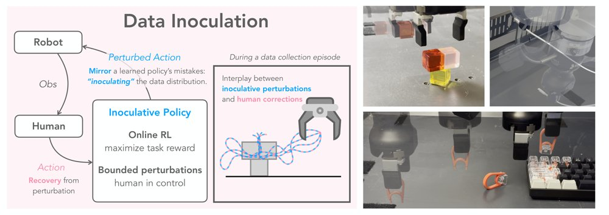
左：采集时用在线 RL 训练残差接种策略，扰动人类的闭环遥操作命令；右：在三个需精细操作的真实机器人任务上，DI 提升 BC 与离线 RL 策略的成功率。
解决了什么问题。机器人模仿学习的效果高度依赖演示数据的覆盖度：熟练操作者的遥操作轨迹往往又快又一致，状态分布狭窄，缺少从偏离状态恢复的示范，策略一旦出错就难以纠回。纯在线 RL 探索代价高且不安全，DAgger 式干预又必须等策略偶然失败才能获得纠正，对易损物体的任务甚至无法事后补救。论文要问的是：能否不改变任务与操作者指令，而是直接改造采集时机器人的行为，从而收集更有用的数据。
方法。DI 采用共享控制框架：人类操作者保持闭环遥操作，每一步给出控制命令，一个残差「接种策略」在同一观测和该命令的基础上输出 L∞ 有界的扰动量，叠加后执行，人类随即对偏差做出纠正，扰动与纠正天然配对成恢复示范。该残差策略与数据采集异步并行，用同一份不断增长的数据以标准 TD 离线式（off-policy）RL 在线训练，优化目标与后续策略提取所用的奖励最大化一致；因此其扰动会模仿「用当前数据训出的策略」可能犯的错，早期评论家网络不准时的利用行为还会把机器人带到需要显式恢复的次优状态。实现上每 0.5 秒（10 Hz 下 5 个控制步）采样一次扰动并保持，评论家直接估计扰动后动作的价值，并用一个流匹配 BC 模型近似 TD 目标所需的「干净」人类动作。
关键结果。在三个真实 Franka 精细操作任务上，t-cube、cable、keycap 分别用 9、5、5 个采集种子，每个种子评估 20 次。BC 策略成功率由 clean 的 0.37/0.38/0.63 提升到 DI 的 0.66/0.50/0.72；离线 RL（BFN 取 N=4）由 0.35/0.42/0.81 提升到 0.67/0.59/0.84。随机噪声基线在 cable 上有提升（BC 0.48、RL 0.56），但在 t-cube 几乎无益（0.40/0.42），在 keycap 上反而拖累 BC（0.69 对比 clean 0.63 尚可，RL 0.67 明显低于 clean 0.81）。采集过程本身，DI 的初期成功率低于对照，约进行到全程四分之一时追平 clean 和 random，最终反超；残余动作幅度随训练持续下降。纠正行为分析显示，DI 的纠正集中在 t-cube 最关键的 place/release 阶段，而随机噪声的纠正多发生在较简单的 retreat 阶段。
为什么值得看。它把「数据采集」本身当成可学习对象：人类负责安全与意图，学习策略负责生成有针对性的扰动，得到接近失败的状态，以及配套的恢复动作，这正是 BC 学恢复、离线 RL 学值函数都需要的覆盖度。相比 DAgger，它不必等真实失败发生，也不改动最终策略的算法。
局限 / 存疑。残差策略从零用在线 RL 训练，采集初期扰动近乎随机，t-cube 上 DI 的整体采集成功率 54.4% 仍低于 clean 的 57.7%（keycap 94.0% 对 95.8%，cable 94.2% 对 96.9%），且需要人类全程在环，人力成本高。keycap 上三种方法差距很小（RL 0.84 对 0.81），说明任务本身对精确恢复要求不高时收益有限；实验仅覆盖三个桌面操作任务、单一机械臂平台，跨任务泛化性尚未验证。
alphaXiv · arXiv
ScheduleGen：多臂演示生成与调度
NVIDIA 等提出 ScheduleGen，用规划与调度从少量示范生成多臂机器人训练数据，并验证真实迁移。
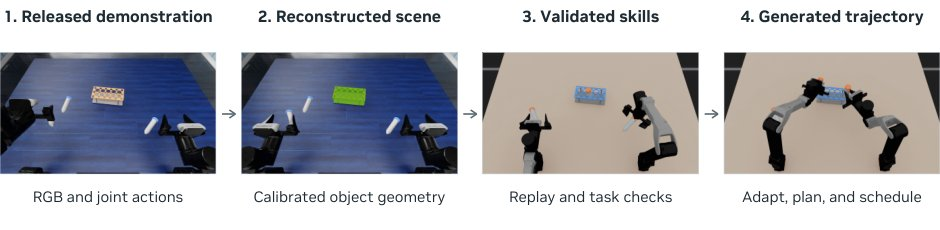
Insert Tubes 示例展示场景校准、通过回放验证技能以及轨迹生成；同一流程为每个 RoboDojo 任务提供五个源示范。
解决了什么问题。多臂机器人（双臂、人形、四臂）能并行完成复杂操作，但大规模示范数据采集成本高、遥操作接口负担重。现有自动演示生成方法往往忽略臂间碰撞与协调约束，容易产生不安全或失败的轨迹，尤其在接触丰富、杂乱场景和宽初始分布下。
方法。ScheduleGen 先把源示范切分为以物体为参照的单臂技能，按新初始状态做技能适配，并用运动规划连接各段。随后把多臂执行顺序建模为带时序约束和碰撞约束的混合整数线性规划（MILP），用 GPU 加速碰撞检查，隐式插入等待以生成无碰撞的联合调度。生成轨迹在仿真回放成功后才保留为训练示范。
关键结果。在 28 个仿真任务变体上，ScheduleGen 平均数据生成成功率为 79.6%，训练策略平均成功率为 65.5%，并在可比任务上优于 DexMimicGen 基线。零样本 sim-to-real 与 real-to-sim-to-real 在 8 个真实世界变体上取得 50–80% 成功率；RoboDojo 七个任务生成成功率为 75.5–100.0%（均值 89.1%）。
为什么值得看。它把多臂协调纳入数据生成环节，减少为每个新布局重新遥操作采集示范的需要，并为双臂、四臂和人形平台的模仿学习提供可扩展的数据来源。
局限 / 存疑。调度公式未显式约束加速度，且若任一机械臂的起止状态发生碰撞，MILP 会不可行。真实世界评估每个变体仅 20 个回合，RoboDojo 策略在物体位姿扰动加倍时平均成功率降至 25.0%。
alphaXiv · arXiv
给离散扩散模型补上概率流ODE
作者提出指数残差流（ERF），为离散扩散构造确定性ODE采样轨迹，并证明其保持原扩散的边缘分布。
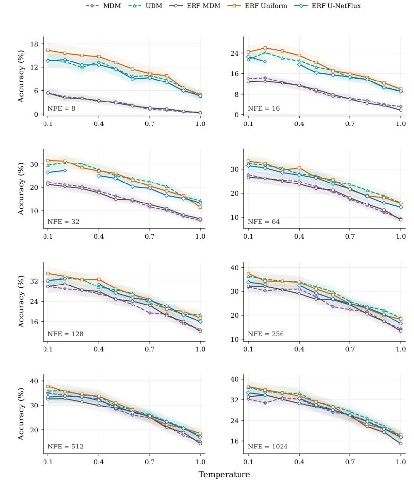
TinyGSM 上各 NFE 预算的采样对比：每个面板给出不同采样温度下的 GSM8K 准确率及逐点 95% bootstrap 置信区间，虚线为祖先采样，实线为 ERF。
解决了什么问题。连续扩散模型的边缘分布可由概率流ODE复现，这一确定性表述是加速采样与一致性蒸馏的基础。离散扩散模型此前缺少对应的确定性形式，采样主要依赖祖先式随机过程。论文追问：离散情形是否也存在类似的ODE表述。
方法。作者为每个 token 和位置引入一个连续残差变量，将离散状态扩展为混合状态；残差按分段定义的 ODE 确定性演化，其向量场取决于当前离散状态以及给定扩散模型的前向、后向速率矩阵。当某个残差到达零时，对应离散状态发生跳变，作者证明该构造保持原扩散模型的边缘分布。随后给出该采样器的实用离散化，并专门化到 masked 与 uniform 两类扩散。
关键结果。论文未给出具体数字：摘要仅报告在包括代码与文本生成任务在内的多个基准上相对既有方法取得经验性提升，未列出任何指标数值。配图显示在 TinyGSM 设置下，跨全部评测的 NFE 预算比较 GSM8K 准确率随采样温度的变化，各面板给出逐点 95% bootstrap 置信区间，虚线为祖先采样、实线为 ERF。
为什么值得看。确定性轨迹把离散扩散接到连续扩散已有的加速采样与一致性蒸馏工具链上，可能让少步数生成在离散文本、代码场景中变得可行。
局限 / 存疑。摘要未报告任何定量结果、基准规模或与基线的具体差距，提升幅度无法核验；同时为每个 token 与位置引入连续残差使状态维度上升，额外的采样开销与离散化误差也未在文中摘要层面量化。
生成式 AI
alphaXiv · arXiv
漂移再扩散：一步生成策略新方法
DriftSpread 用 critic 梯度做漂移、就势加噪做扩散，顺序训练同一 actor 的一步生成策略。

DriftSpread 总览：(a) 训练在 critic 学习与顺序 Drift–Spread actor 更新之间交替，Drift 用动作回归、Spread 用分布匹配；(b) 曲面示意负 MaxEnt 目标，样本显示 Drift 把动作推向更高 critic 值、Spread 再拓宽分布以体现熵。
解决了什么问题。扩散与流匹配策略能给在线强化学习带来表达能力强的动作分布，但往往需要多步迭代采样，训练和推理代价都高，MeanFlow 等少步方法只缓解了部分成本。Drifting 为一步生成提供了另一条训练路径，已在 ImageNet 上优于 MeanFlow 变体，但在在线 RL 中尚未充分研究。在线最大熵 RL 要求策略逼近 critic 定义的 Boltzmann 分布，而该目标只以能量形式给出、无法直接采样，隐式 actor 也拿不出可处理的密度或 score 来计算熵项。
方法。DriftSpread 从负 MaxEnt 目标出发，借助 Wasserstein 梯度流把策略演化拆成两项：由 critic 梯度引导的 Drift 和由熵诱导的 Spread。训练时在同一 actor 上顺序执行：先用动作回归拟合 a+η∇Q 的停止梯度目标，再对更新后的动作加入协方差为 2ληI 的独立噪声，并用基于特征函数、无需密度估计的 MMD 匹配这一分布。在精确拟合、critic 固定等假设下，论文证明步长趋于零、演化时间趋于无穷时策略弱收敛到 Boltzmann 目标。
关键结果。在 MuJoCo 五个任务、每任务 100 万次环境交互、五个随机种子的设置下，DriftSpread 的聚合归一化回报在全部 13 个基线中最高，但论文未给出该聚合值的具体数值。单步推理耗时为每动作 0.15 ms，低于 DIME 的 1.24 ms 与两步 MeanFlow 策略 MFPO 的 0.36 ms；HalfCheetah-v3 与 Walker2d-v3 上晚期平均回报排名第一。二维高斯 Boltzmann 示例中，顺序拟合的最终 KL 为 0.000422，网格搜索权重后的联合拟合为 0.512165，后者方差比约 (0.80, 3.15)，一维过窄、另一维过宽。
为什么值得看。在线 RL 的生成式策略长期在表达力与采样成本之间取舍，一步前向生成动作意味着多模态动作分布可以进入对控制频率敏感的场景。该方法也给出了一条工程化路径：不依赖隐式策略的密度与 score 估计，而是通过加噪与分布匹配来体现熵项的作用。
局限 / 存疑。评测只覆盖 MuJoCo 仿真，未检验真实控制任务中的观测噪声与动力学变化；收敛性分析以精确拟合和固定 critic 为前提，与在线训练的实际过程存在差距。扩散噪声的分布与尺度在训练中固定，频率尺度等超参对结果敏感，论文附录显示偏离默认尺度会变差，而且每个任务单独设定 Spread 学习率也增加了调参负担。
强化学习 RL & 序列决策
alphaXiv · arXiv
让自回归视频生成提前预测更远的块
Prospective Forcing 在滚动窗口生成器上加多个轻量预测头，并行预测未来第 1、2 个视频块，用跨块自蒸
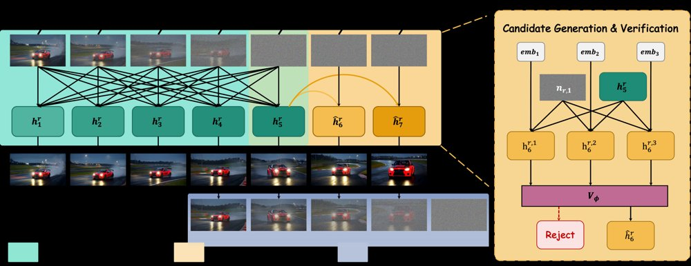
左：窗口内联合去噪 5 个块后，2 个预测头从最后一块特征并行预测第 6、7 块，前端的干净块被提交、窗口前移；右：为下一块生成 3 个候选，由验证器选出一个或全部拒绝。
解决了什么问题。自回归视频生成逐块推进，但训练目标只监督紧邻的下一个块，模型因此表现出「时间短视」：在长时间 rollout 中，主体身份、背景、布局和颜色会逐渐漂移。已有的曝光偏差修正、推理期上下文保持和去噪调度方法，都没有直接要求模型表示携带预测远期所需的信息。
方法。在滚动窗口里联合去噪 W=5 个块，取窗口最后一块的骨干特征，接 K=2 个轻量预测头并行预测后续第 1、2 块的特征与速度；监督信号来自同一因果 rollout 中后续窗口骨干自己的输出，并用 stop-gradient 做跨块自蒸馏。第一个头配有可学习的候选嵌入，可生成 M=2 个候选；一个轻量 MLP 验证器从中选一个，或全部拒绝并回退到标准自回归路径。当预测被接受时，该块直接提交，省去一次整窗骨干执行。
关键结果。在 200 条 MovieGen 提示词、30 秒 832×480/16fps 的设定下，方法取得 VBench Total 81.40、Quality 82.71、VBench-Long Quality 83.71、MUSIQ 69.14、漂移 3.64、FPS 9.23；Rolling Forcing 对应为 78.63、80.05、82.20、68.92、5.32、7.95。验证器接受 32.1% 的提议（每视频 28 轮中 9 轮），带来 1.20× 加速；不做验证直接提交 G1/G2 预测的加速为 1.56× 和 1.89×，但漂移升至 4.22 和 4.51。消融显示，预测偏移 {1} 时 Quality 81.00、漂移 4.08，{1,2} 为 81.29/3.29，扩到 {1,2,4} 漂移降到 2.89 但 Quality 跌至 80.21。
为什么值得看。它把「预测更远的未来」当作训练时的表示学习目标，而不是推理期的补丁，为长视频一致性提供了与噪声调度、KV 缓存管理正交的一条路。预测头还能复用为投机式采样，兼顾质量与速度。
局限 / 存疑。每个提交的块仍需一次无法跳过的 cache-update pass（约占标准推理时间 20%），加速因此远低于跳过窗口的比例。理论分析限于 W=1、精确对齐 α=0，且作者明确表示未把可辨识性与漂移形式化关联；LongLive 的漂移 3.43 和 VideoScore 3.108 仍略优于本文的 3.64 和 3.069。
生成式 AI
alphaXiv · arXiv
跳过逐点VJP，flow策略RL微调更省算力
预训练flow策略的速度雅可比近似对角，作者据此推出闭式标量伴随，省去每步VJP；最难四域成功率提升18–35点。
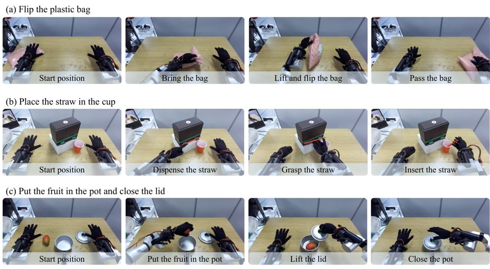
三个真机操作任务概览，自上而下依次为翻塑料袋、把吸管放进杯子、把水果放进锅里并盖上盖子，每行从左到右展示任务进程。
解决了什么问题。用off-policy RL把flow策略微调到演示数据之上时，策略要在多步采样链上生成动作，而critic只评价最终动作。adjoint matching能把价值梯度回传到每个flow步，但每一步都要过一遍向量–雅可比积，其开销随flow步数与策略规模增长，难以支撑越来越大的预训练策略。
方法。作者发现，预训练flow策略的批平均速度雅可比集中在对角线上，于是把雅可比近似为标量乘单位阵，推导出闭式解：每个flow步的伴随向量就是最终动作处critic梯度的−τ倍，只需一次梯度、不做过VJP。作者进一步指出标量伴随直接依赖策略生成动作处的critic梯度，因而在critic损失中加入该动作与数据集动作的价值差惩罚（value penalty），与标量伴随合起来构成SQAM。
关键结果。在OGBench全部50个任务上，SQAM离线训练1M步的平均成功率为75%，最强基线TRQAM为68%；增益集中在四个最难域，分别比各域最强基线高21、18、22、35个百分点，cube-quadruple上由19%提升到54%。真机上微调视觉-语言-动作策略RLDX-1，三个任务各评测30条episode：SFT为15/30、7/30、4/30，SQAM离线转在线后为25/30、15/30、13/30，而EXPO-FT在该设置下表现不佳。
为什么值得看。它把flow策略的RL微调成本从「每步一次VJP」降到「一次critic梯度」，在策略规模增大时更容易扩展，并在真机VLA策略上显示出超过监督微调的效果。作者据此提出，当前瓶颈可能不在策略更新而在critic的价值学习。
局限 / 存疑。雅可比近似对角只是跨10个域的经验观察，作者明确表示未解释其成因；标量伴随与精确伴随仍有夹角，在操作类域上更大，正是单用标量伴随表现较差的域，而value penalty在cube-double上因降低离线性能被关闭。真机实验只覆盖3个任务、每任务30条评测episode、固定初始配置且按任务分别微调，多任务场景尚未验证。
强化学习 RL & 序列决策
alphaXiv · arXiv
频域掩码解耦双参考图，统一个性化生成
合肥工业大学团队提出 Dual-FDM，在频域用掩码分离两张参考图的不同频段，同时处理定制风格迁移与颜色风格迁移。
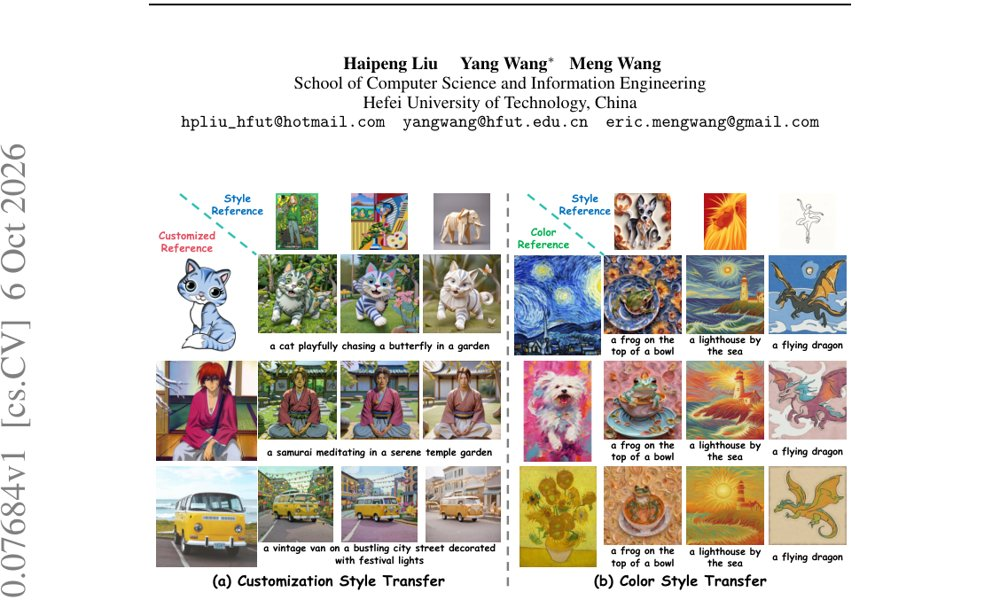
图 1：Dual-FDM 的生成示例，(a) 为定制风格迁移（左侧为定制参考、上方为风格参考），(b) 为颜色风格迁移（左侧为颜色参考、上方为风格参考）。
解决了什么问题。个性化图像生成包含图像定制与风格迁移两类子任务，但已有扩散模型常出现生成结果与文本提示不对齐：定制时背景被图像参考淹没，风格迁移时风格信息泄漏到前景。作者将根源归因于去噪过程中混合频段的纠缠——低频携带颜色、中频编码全局结构、高频对应局部纹理，而早期高噪声阶段主要恢复低中频，当其纠缠在单张图像参考中时会相互强化，压制文本提示的引导。
方法。Dual-FDM 先用离散余弦变换（DCT）把参考图的前景或背景映射到频域，用从左到右的掩码切出低、中、高频带；同时对解耦交叉注意力中的 key 投影矩阵做奇异值分解并取奇异值倒数，构造“背景矩阵”以压制前景、增强背景。定制风格迁移把风格参考背景的中频替换为定制参考前景的中频，颜色风格迁移则把风格参考背景的低频替换为颜色参考前景与背景的低频，替换后的频带作为 key 和 value 重建去噪图像的前景与背景。最后用替换频带的信息熵比值自适应划分早期与晚期去噪步数。
关键结果。在 DreamBench/TI 与 DreamBench++ 等组合数据上，Dual-FDM_cust 取得 CLIP-T 0.3194、CLIP-TC 0.5031、CLIP-CS 0.6687、IR 5.3487、HPS 2.6007；相比 MS-Diffusion+CSGO，在 CLIP-T 上最多领先 2.27%、CLIP-TC 7.5%、CLIP-CS 4.17%、DINO-CS 27.28%、HPS 2.24%。颜色风格迁移在 T2I-CompBench++ 的 Color 类别上取得 CLIP-TS 0.5015、CLIP-S 0.7178、DINO-S 0.4970。单张推理耗时 10.26 秒、显存 12.48GB，在表 10 的对比方法中为最低。实验基于 IP-Adapter 与 SDXL、30 步采样、单张 RTX 4090。
为什么值得看。它提供了一个无需额外训练、以频域解耦统一“定制”与“颜色或风格”两类参考的视角，且推理开销低于多数对比方法，对个性化生成的可控性研究有直接参考价值。
局限 / 存疑。作者在附录中承认，当风格参考只包含极稀疏图案（如线条结构）时，中频定制线索会衰减高频风格细节，导致风格信息不完整。此外论文检查表标注未做误差棒或统计显著性检验，结论的稳健性仍待验证。
生成式 AI
alphaXiv · arXiv
用回归估计价值梯度，扩散模型RL训练提速数倍
新方法把中心化奖励回归到干净图像上构造更新方向，跳过奖励求导与轨迹反向传播，宣称以约五分之一算力匹配或超越Diffusi
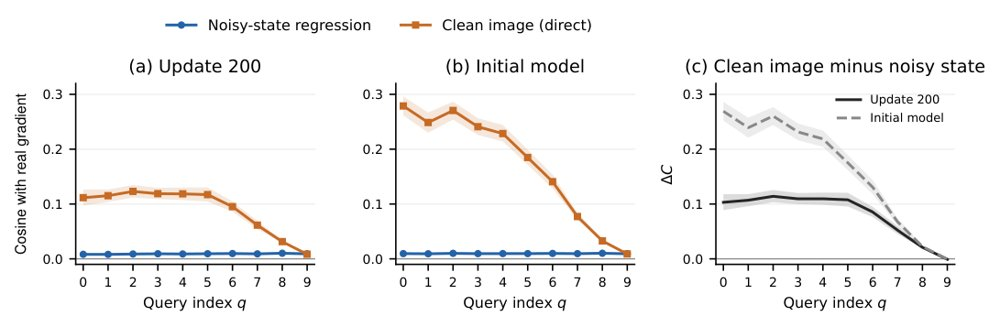
图：与数值 ODE 真实梯度相比的 PickScore 余弦相似度，左、中为噪声态回归与直接干净图像回归，右为两者配对差值，阴影表示对提示重采样得到的 95% 置信区间。
解决了什么问题。用强化学习微调扩散或流匹配模型时，每次更新都要完整去噪并估计模型改动对最终奖励的影响，训练成本很高。DDPO、Flow-GRPO、DiffusionNFT 等做法要么在采样轨迹上反传，要么需要奖励的导数。作者希望在显著更低的算力下拿到同样有效的更新方向。
方法。论文先用一阶变分给出带轨迹 KL 惩罚与不带惩罚时统一的价值梯度目标，再在 Gaussian 加噪模型下做总体分析，证明把中心化奖励对中心化干净图像做归一化岭回归，得到的是协方差预条件后的价值梯度方向，且不需要奖励导数。实现上按奖励连续性选择 rollout：平滑奖励（如 PickScore）用同一条轨迹上的小噪声轨迹库取局部对比，离散奖励（如 GenEval）用独立种子分组取更宽的对比，并配合奖励相关的查询权重。拟合出的方向直接用于策略更新，不做伴随反传。
关键结果。五奖励联合训练的单个 SD3.5-Medium 模型在 8 项指标中有 7 项不劣于或超过 DiffusionNFT 联合模型：GenEval 0.94、OCR 0.92、PickScore 23.82、ClipScore 0.303、HPSv2.1 0.339，仅 Aesthetic 略低（5.95 对 6.01），训练用 1000 次更新、404 GPU 小时；论文估计 DiffusionNFT 该模型至少需 2000 GPU 小时。单奖励设定下，达到相同奖励阈值比复现的 DiffusionNFT 快 2.1–6.7 倍（PickScore 2.1–2.6×、OCR 6.2–6.7×、GenEval 2.6–4.5×）；PickScore 达到 23.20 用 14.3 GPU 小时，FDFO 需 109.3。方向对齐消融中，干净图像回归把与数值 ODE 真实梯度的加权平均余弦从 0.009 提到 0.107（配对增益 0.098，95% 置信区间 [0.092, 0.106]）。
为什么值得看。它把扩散模型 RL 的更新方向归结为一次小规模岭回归，避开了伴随反传和奖励求导这两个最贵的环节，让「用奖励后训练生成模型」的算力门槛明显下降。
局限 / 存疑。理论保证建立在 Gaussian 加噪、精确条件化以及理想化 Langevin 采样的额外假设上，属于局部或条件性结论；纯 OCR 训练出现明显的奖励劫持（DrawBench PickScore 20.32，低于基模的 22.34），需要额外设计质量下限来补救。此外对比中 DiffusionNFT 的联合训练算力是按官方代码在本机测速推算而非原文报告，复现基线也与公开行不完全一致；实验只覆盖 SD3.5-Medium、512×512 一种骨干。
生成式 AI
强化学习 RL & 序列决策
alphaXiv · arXiv
计算匹配下合成预预训练未胜自然语言
在计算匹配的多种训练机制中，把算力分给合成预预训练（PPT）始终不如直接训练自然语言；小预算下的增益也随规模消失。
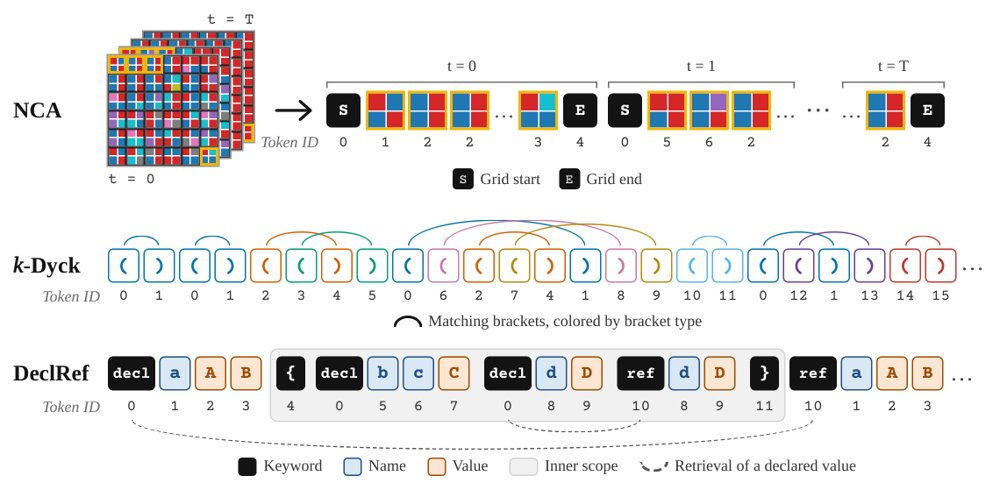
合成预预训练数据的词元化：NCA的每个网格按2×2图块切分并随时间拼接，k-Dyck的括号类型各自成词元，DeclRef的关键字、作用域括号、名称和值均为独立词元。
解决了什么问题。合成预预训练被提出作为语言模型正式预训练前的阶段，试图用k-Dyck、神经细胞自动机等合成分布注入可迁移的归纳偏置。但此前报告的增益是否稳健、在总算力固定时是否值得从自然语言训练中分走算力，仍缺乏系统检验。
方法。作者在四种PPT课程（k-Dyck、NCA、DeclRef和代码）与三种训练机制（数据受限、数据不受限、高token-to-parameter比）下，比较“加法算力”和“计算匹配”两种分配方式。实验还消融权重初始化方案，并追踪模型在PPT分布上的表现以及将合成数据均匀交错到训练中的效果。
关键结果。在NCA复现中，原始初始化下PPT带来5.4%的困惑度改善；但把嵌入初始化改为N(0,0.02)后，无PPT基线自身改善9.0%，两者差距消失。计算匹配实验中，数据受限设置固定100M自然语言token和1×10^18 FLOPs，over-Chinchilla设置训练881M参数模型、50B token，PPT均未超过自然语言基线；到1B自然语言token时，小预算下的加法收益也消失。
为什么值得看。这表明把合成数据前置为独立PPT阶段可能不是划算的算力用法；更值得探索的是在训练中渐进或交错地整合合成数据，并重新评估其保留机制。
局限 / 存疑。作者未能在9×10^18 FLOPs以上进行完整超参搜索，且PPT算力占比固定为1%和5%而非调优；效应量整体较小，并与先前工作因NanoChat的tokenizer、架构和数据不同而不可直接比较，BPB与困惑度的差异也需谨慎解读。
alphaXiv · arXiv
混合注意力因果预训练让交互世界模型稳定一小时
为交互式视频世界模型提出 Mix Forcing 因果预训练：自注意力混合教师强制与双向训练保住视觉先验，再用 CD 与
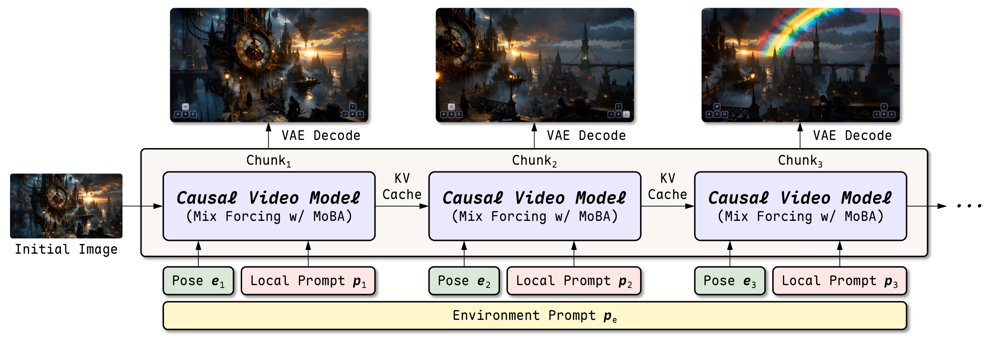
给定初始图像与环境提示，模型依据 KV 缓存的历史上下文、相机位姿与局部提示自回归生成每个 latent 块，再由 VAE 解码器输出视频片段。
解决了什么问题。交互式视频世界模型要求按块自回归生成，每块只能看历史与当前指令；但把预训练的双向视频扩散模型直接改成教师强制训练，会在两方面偏离预训练设定：注意力上每个块只看自身与历史而非全视频，噪声水平上每块由干净历史预测而非与其他块在同一时间步联合去噪，从而破坏视觉先验、降低生成质量。此外既有因果预训练多用一个全局提示条件整段视频，等于把未来指令提前泄露给当前块；流式方法则按新提示重算历史 KV 缓存，改写了已生成帧的上下文。
方法。作者提出 MoBA（双向与自回归混合）注意力块：在同一次前向中，教师强制分支的每个噪声块通过稀疏掩码只注意自身与干净历史，另外追加的双向分支噪声 latent 之间相互全注意，从而在保持因果预测能力的同时复现预训练的注意力与噪声设定。交叉注意力采用块级提示条件，每个教师强制块只注意共享环境提示与自己当前的局部提示，双向分支仍用全局提示；推理时提示更新只影响后续块，过去块的 KV 缓存可直接复用。方法从 14B 图生视频模型 Wan2.1-I2V-14B-480P 出发做因果预训练（相机位姿以 Plücker 嵌入经 AdaLN 注入），再用一致性蒸馏（CD，LPIPS 距离）与分布匹配蒸馏（DMD）压成四步自回归生成器。
关键结果。在自建 InBench 上，平均质量 75.1 为对比方法最高，事件遵循 EA=94.4、1.5 秒内及时准确率 OT1.5s=96.8，相机旋转/平移误差 0.296/0.316、CMC=0.539；同表最强的 LingBot-World-Fast 对应为 72.4、86.5、87.3 与 1.065、0.433、1.312。SANA-WM-Bench 的 60 秒简单/困难轨迹上平均质量 74.8/74.7、SIQ 66.7/66.4。一小时 rollout 按每五分钟窗口统计的质量均值在 67.3–71.6 之间，末段 69.3、首段 71.0；WBench 的 Navi-158 子集上平均质量 78.5、Setting 遵从度 80.3、Interaction 84.3。消融显示，同样经 CD→DMD 的四步模型，Mix Forcing 预训练对比仅教师强制：质量 70.9 vs 64.1、EA 55.1 vs 33.7、OT1.5s 64.3 vs 19.8；块级提示对比全局提示把 EA 从 23.4 提到 50.0、OT1.5s 从 18.3 提到 62.1。
为什么值得看。交互式视频世界模型被视为游戏、具身智能与世界模拟的基础设施；用因果预训练把双向扩散先验低成本转成自回归生成器，再经四步蒸馏与 KV 缓存实现实时交互，是一条可直接通往可部署实时世界模型的路线。一小时生成质量基本不衰减，说明长时一致性不必依赖不断重算历史。
局限 / 存疑。作者承认相机控制在只有单一全局提示时精度下降：SANA-WM-Bench 硬轨迹上旋转误差 1.214，不及 Matrix-Game 3 的 0.914，且方法依赖自注意力与交叉注意力分离的视频 DiT 架构，能否推广到统一注意力尚未验证。主要结果建立在自建 InBench 与自采 100k 片段（974 小时）训练集上，第三方复现与横向比较成本较高。
alphaXiv · arXiv
LucidLyra：单图生成可查询3D场景
LucidLyra 将单图生成的3DGS场景变为可直接查询开放词汇语义与实例的三维表示，无需逐场景优化。
资产选择与提取。
解决了什么问题。生成式3D重建已能从单张图像合成可渲染环境，但输出主要只有几何与外观，缺少语义角色和对象实例。现有3D理解方法通常需要捕获多视图，或依赖逐场景基础模型预处理与优化，难以直接用于单视图生成场景。
方法。LucidLyra沿用Lyra的latent-to-Gaussian路线，把相机控制视频扩散模型的多视图latents、相机射线和输入图像C-RADIO特征送入统一3DGS解码器。训练时，冻结的视觉语言、分割和跟踪基础模型在生成视频上产生语义与实例伪标签，再通过多任务蒸馏写入每个高斯的语义与实例特征。模型无需人工3D标注、捕获多视图数据或推理时逐场景优化，并可扩展到单目视频动态场景。
关键结果。在LucidLyra-SDG静态基准上，LucidLyra取得mIoU 64.1、mTrackPR 21.5，LucidLyra+将mIoU提至67.9；相比Lyra，PSNR为25.02 vs 24.49 dB，LPIPS为0.186 vs 0.211。摘要报告相对最强可比基线，语义mIoU高31.7个百分点、实例mTrackPR高9.8个百分点，PSNR高0.53 dB。ADE20K条件场景上mIoU 49.8、LucidLyra+ 53.7；动态场景PSNR 21.88 vs 22.16 dB，mIoU 53.2（LucidLyra+ 62.6）。单场景分割耗时2.1/2.3分钟，逐场景优化基线需64至697分钟。
为什么值得看。机器人仿真、物理AI和3D编辑需要的不是彩色基元集合，而是带语义角色和实例边界的结构化场景；LucidLyra把生成式重建输出变成可直接查询的3D世界，为这些下游应用铺路。
局限 / 存疑。局限在于语义和实例监督来自生成视频与冻结2D基础模型的伪标签，跨视图不一致或教师错误可能被蒸馏进3D表示。动态扩展存在重建折衷（PSNR 21.88 vs 22.16 dB），且评估基于25场景的 curated 基准和固定生成轨迹，单图多解问题仍未解决。
alphaXiv · arXiv
用矩约束改进一步文生图蒸馏
论文在 DMD 蒸馏中加入生成器 EMA 特征空间的矩约束，试图改善一步/少步文生图的提示细节还原。
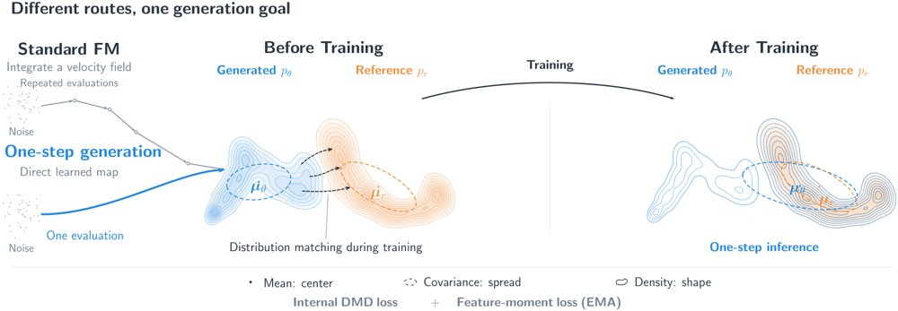
多步采样迭代细化样本，而一步生成学习从噪声到数据的直接映射；方法在生成器 EMA 特征空间联合内部 DMD 损失与特征矩损失，右图示意单次评估推理的理想对齐。
解决了什么问题。一步和少步文生图必须在很少的细化机会下准确呈现提示中的细节，长文本渲染是典型压力测试。DMD 通过分数差把生成分布拉向参考分布，但学习到的分数监督是否足够仍待检验。作者据此追问：显式的矩约束能否改进这一监督信号。
方法。作者把反向 KL 场分解为高斯矩分量与非高斯残差，指出可显式约束的统计量。方法在生成器的 EMA 特征空间中，将内部 DMD 损失与特征矩损失结合，并沿用内部速度分支估计分数差，避免单独的假分数网络。实验比较 L_pop 与内部 DMD、EMA 特征与外部编码器，以及速度/端点回归的选择。
关键结果。在单张 A100（BF16）上，论文报告 batch=10 的吞吐（样本/秒）和 batch=1 的延迟（秒）；GenEval 汇总六个类别，基线 Z-Image 约 100 NFE，Z-Image-Turbo 为 8-NFE 蒸馏模型，两个提示在 1 和 2 NFE 下评估。就所给材料而言，FID、CLIP 与 GenEval 的具体数值未给出，论文未给出具体数字。
为什么值得看。若矩约束确实补足 DMD 的分数监督，它可作为不增加假分数网络的轻量插件，降低一步/少步生成的推理成本。对长文本渲染等细节密集任务，这类约束尤其值得关注。
局限 / 存疑。作者强调，协方差收缩命题只适用于平方误差下实现条件均值的预测器，严格收缩还需存在未解释的条件方差，不能据此断言一步生成器普遍低估方差。所给材料缺少完整定量表格，系统级效率与质量优势仍需核对原文数据。
alphaXiv · arXiv
学习率调度的后期阶段主导最终损失
两条学习率调度在峰值、终端与累积学习率匹配后互相交换训练阶段，后期交换几乎转移全部最终损失差距。
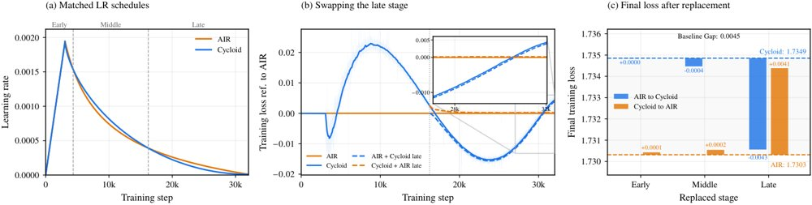
在峰值、终端与累积学习率匹配的两条完整调度之间交换后期阶段，几乎能把最终损失差距完整转移到任一调度，而早、中期交换影响很小（柱高为终端 EMA-0.99 训练损失）。
解决了什么问题。学习率调度是训练大模型时的标配组件，但究竟是调度曲线的哪一段真正决定最终损失，一直缺少受控的因果证据。以往比较不同调度时，往往整条曲线一起改变，峰值、终值与累积学习率等因素互相纠缠，很难把性能差异归因到某个训练阶段。
方法。作者先构造两条完整的学习率调度（其中一条为 Cycloid），并让两者在峰值学习率、终端学习率与累积学习率上相互匹配，排除这些混杂因素。随后做阶段交换干预：分别把早期、中期和后期片段从一条调度换到另一条调度上。评价指标为终端指数滑动平均（EMA-0.99）训练损失。
关键结果。交换后期阶段后，最终损失差距几乎被完整转移到任一调度上；而交换早期或中期阶段几乎没有影响。损失数值、交换点位置与重复次数论文未给出具体数字（材料仅给出 EMA-0.99 这一设置）。
为什么值得看。如果最终损失主要由训练末段的学习率决定，那么调度设计与超参搜索的算力就应该更多投向后段，早期曲线的精细调优可能收益有限。这也为「调度形状重要还是末期学习率重要」这一长期争论提供了一个可检验的因果视角。
局限 / 存疑。现有证据只来自图中所示的一对调度与单一指标（训练损失而非验证精度），论文未给出具体数字，交换点定义与统计显著性也不清楚。结论能否推广到其他模型规模、数据集与优化器，仍需更多实验验证。
alphaXiv · arXiv
SMD：四步采样覆盖五类生成任务
作者称「简洁即可扩展」：同一套SMD在4-NFE下覆盖图像、视频、编辑、多教师与音视频生成。
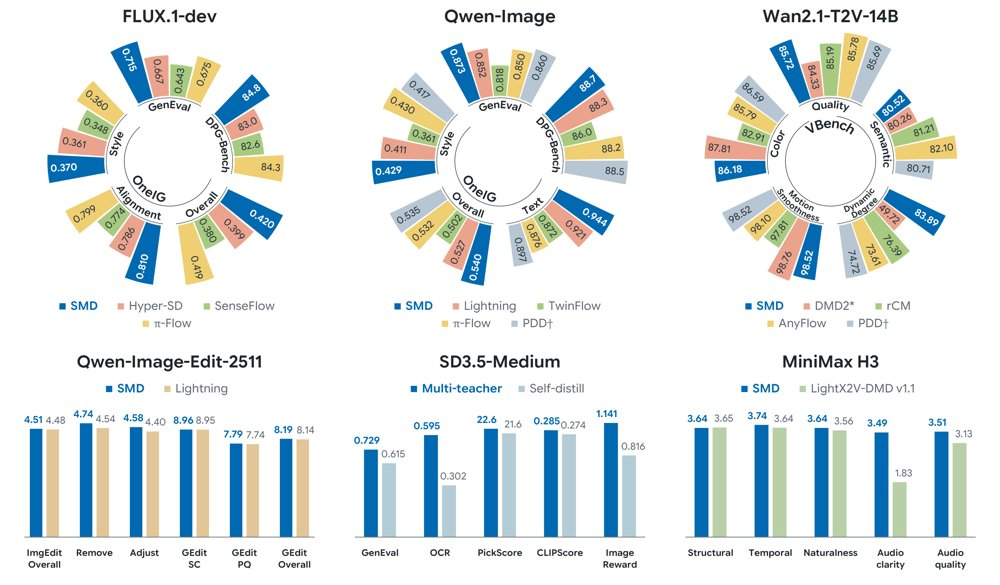
SMD在4-NFE下于图像、视频、编辑、多教师与音视频生成五类任务上的表现对比，径向轴按指标截断，柱状轴从零起，指标均为越高越好。
解决了什么问题。扩散与流匹配模型生成质量不断提升，但推理需要较多采样步数，速度仍是实际部署的主要瓶颈。已有的少步蒸馏方案（如DMD2）大多在单一模态或单一任务上验证，尚不清楚同一套方法能否在图像、视频、编辑、多教师和音视频等差异很大的任务上同时成立。
方法。论文提出SMD，把采样预算压到4-NFE（每个样本4次函数评估），并在图像生成、视频生成、图像编辑、多教师蒸馏和音视频生成五类任务上统一评测。对比对象包括作者自行复现的DMD2以及PDD的结果。除图注外，材料未提供方法细节，SMD的具体蒸馏目标与训练流程论文正文未给出。
关键结果。提供的材料只有图注，论文未给出具体数字。可核实的设定是：所有任务统一在4-NFE下评测，指标均为越高越好，包含语义一致性（SC）与感知质量（PQ）两类；图中DMD2一栏标注为作者自行复现，PDD的结果也一并列出。
为什么值得看。如果4-NFE能在模态与任务差异如此大的场景下同时成立，少步蒸馏就更可能成为通用的推理加速方案，而不必为每个任务单独设计蒸馏流程。
局限 / 存疑。材料仅含一条图注，标题、正文、基线配置与全部数值均缺失，无法核验「简洁即可扩展」这一主张。图注还说明径向轴按指标分别截断、柱状轴从零起，且自行复现的DMD2与PDD结果的对比条件未交代，跨任务结论需谨慎看待。
alphaXiv · arXiv
视频生成转向智能体运行时
一篇综述以“智能体运行时”为分析单元，串联智能体视频生成、世界模型交互与递归自我改进三条路线。
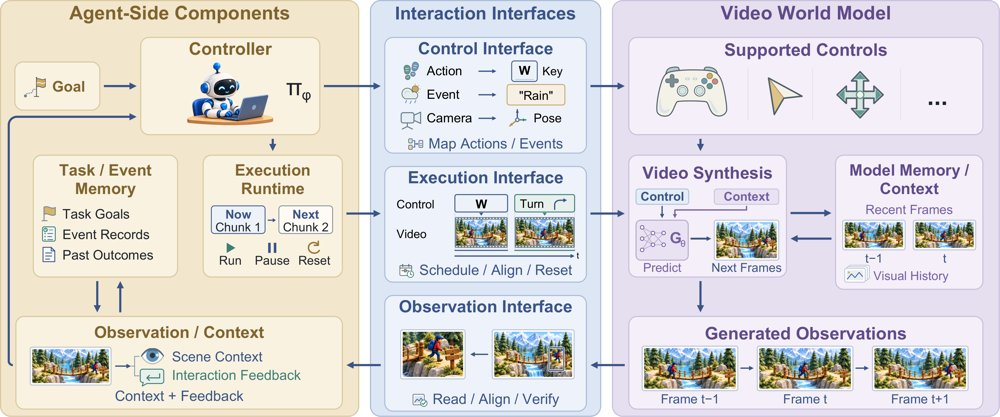
从视频生成到由智能体运行时介导的世界交互：条件生成仍是共同核心，运行时负责观察、决策、控制转换、调度生成并整合反馈与历史。
解决了什么问题。视频生成器能产出越来越逼真的片段，但本身不组织完成视频任务所需的决策：创意简报要变成连贯镜头，参考要在场景间保持，生成结果要检查，剪辑要保留正确部分。交互式视频还要求动作能基于观察持续进行，而不只是输出一段成品。现有综述多分别讨论生成模型、智能体或世界模型，较少把视频生成器外围的运行时作为贯穿生产、交互与模型开发的统一分析单元。
方法。综述定义了一个共同的“智能体—运行时”执行循环，并据此组织三类问题：智能体视频生成按脚本规划、素材管理、镜头生产、编辑等工作流功能展开；智能体世界建模按观察、控制、执行、状态等运行时接口展开；递归自我改进则区分当前输出修订、运行时状态/生成器参数/评估器更新，以及产生后续更新的流程变更。作者还比较了相关综述的覆盖范围，并提出评估要求与开放挑战。
关键结果。作为综述，论文未给出具体实验数字；其框架归纳了三个核心方向与三个问题，并提出四条改进可回流到视频开发的通道。作者同时指出，在所调研系统中，尚无系统能够修订训练和验证生成器的流程。
为什么值得看。这把讨论重心从“生成一段好视频”转向“通过反馈可靠完成视频任务”，为生产流水线、世界模型交互和模型开发提供了共同词汇。它也有助于设计同时考察视频质量与任务表现的评测。
局限 / 存疑。论文是概念性综述，未提供实验或定量验证；其递归自我改进部分更像路线图，因为尚无调研系统跑通完整闭环。运行时框架覆盖面较广，具体系统未必实现图中所有组件，视频质量与任务表现如何联动评估仍待解决。
alphaXiv · arXiv
正交参数化改进LLM多属性steering
论文用区间裁剪、参数化设置和正交化，改进LLM多属性激活steering。
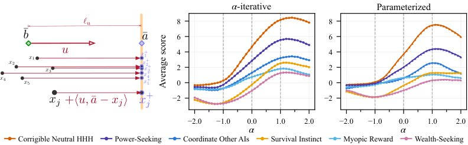
参数化steering与α-迭代steering的对比图。
解决了什么问题。激活steering能在推理时轻量修改LLM行为，但同一标称强度在不同steering向量上的效果差异很大，强度含义不统一。多属性同时steering时，相关向量会互相拖拽，导致过steering或生成偏离分布。
方法。作者先为每个向量搜索最可steering的线性区间，并将其线性映射到[-1,+1]；随后提出parameterized steering，把激活沿steering方向设置到目标trait强度，而不是固定加一个位移。多属性场景中，他们用低秩仿射变换将steering向量正交化并重参数化，使每个trait对应独立坐标，从而可按任意顺序独立调节。
关键结果。在Llama 2 7B Chat上，高度相关trait对的平均灵敏度从α-iterative的1.508降到正交参数化的0.827；steering范围在β=-1和β=+1时分别约为3.221和3.040，高于α-iterative的1.550和1.794。sycophancy/warmth例子中，标准多属性steering将warmth从无steering的61.5%压到30.0%，正交参数化恢复到43.0%（sycophancy均为51.5%）。在BBQ/Toxigen/TruthfulQA上，参数化方法的percent_steered为72.0/96.0/84.0，正交参数化为69.5/95.0/78.5，高于无steering的59.5/89.0/63.0。
为什么值得看。更可解释的强度刻度与多属性解耦，能让开发者同时调节多个行为，例如让心理治疗助手温暖但不谄媚，同时保持线性steering的轻量和可解释性。
局限 / 存疑。作者承认不能完全消除干扰：sycophancy/warmth正交化后类别均值仍接近，且合成warmth数据存在长度线索（+2响应在79.5%家族中比-2更长）。此外MAT-Steer基线未能完全复现，Qwen 3 8B上的结果只是部分复现。
alphaXiv · arXiv